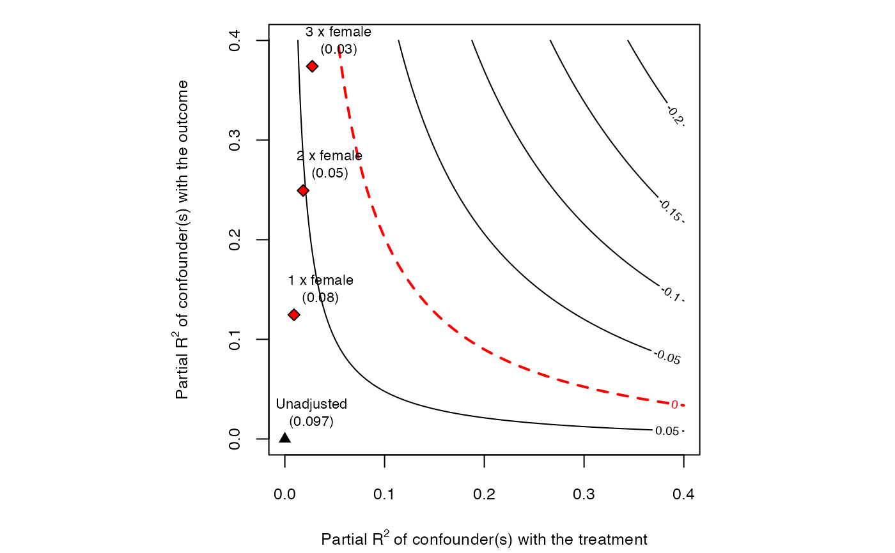

R/ovb_bounds.R
ovb_bounds.RdBounds on the strength of unobserved confounders using observed covariates, as in Cinelli and Hazlett (2020). The main generic function is ovb_bounds, which can compute both the bounds on the strength of confounding as well as the adjusted estimates, standard errors, t-values and confidence intervals.
Other functions that compute only the bounds on the strength of confounding are also provided. These functions may be useful when computing benchmarks for using only summary statistics from papers you see in print.
ovb_bounds(...) # S3 method for lm ovb_bounds( model, treatment, benchmark_covariates = NULL, kd = 1, ky = kd, reduce = TRUE, bound = c("partial r2", "partial r2 no D", "total r2"), adjusted_estimates = TRUE, alpha = 0.05, h0 = 0, ... ) ovb_partial_r2_bound(...) # S3 method for numeric ovb_partial_r2_bound( r2dxj.x, r2yxj.dx, kd = 1, ky = kd, bound_label = "manual", ... ) # S3 method for lm ovb_partial_r2_bound( model, treatment, benchmark_covariates = NULL, kd = 1, ky = kd, adjusted_estimates = TRUE, alpha = 0.05, ... )
| ... | arguments passed to other methods. First argument should either be (i) an |
|---|---|
| model | An |
| treatment | A character vector with the name of the treatment variable of the model. |
| benchmark_covariates | The user has two options: (i) character vector of the names of covariates that will be used to bound the plausible strength of the unobserved confounders. Each variable will be considered separately; (ii) a named list with character vector names of covariates that will be used, as a group, to bound the plausible strength of the unobserved confounders. The names of the list will be used for the benchmark labels. Note: for factor variables with more than two levels, you need to provide the name of each level as encoded in the |
| kd | numeric vector. Parameterizes how many times stronger the confounder is related to the treatment in comparison to the observed benchmark covariate.
Default value is |
| ky | numeric vector. Parameterizes how many times stronger the confounder is related to the outcome in comparison to the observed benchmark covariate.
Default value is the same as |
| reduce | Should the bias adjustment reduce or increase the
absolute value of the estimated coefficient? Default is |
| bound | type of bounding procedure. Currently only |
| adjusted_estimates | should the bounder also compute the adjusted estimates? Default is |
| alpha | significance level for computing the adjusted confidence intervals. Default is 0.05. |
| h0 | Null hypothesis for computation of the t-value. Default is zero. |
| r2dxj.x | partial R2 of covariate Xj with the treatment D (after partialling out the effect of the remaining covariates X, excluding Xj). |
| r2yxj.dx | partial R2 of covariate Xj with the outcome Y (after partialling out the effect of the remaining covariates X, excluding Xj). |
| bound_label | label to bounds provided manually in |
The function ovb_bounds returns a data.frame with the bounds on the strength of the unobserved confounder
as well with the adjusted point estimates, standard errors and t-values (optional, controlled by argument adjusted_estimates = TRUE).
The function `ovb_partial_r2_bound()` returns only data.frame with the bounds on the strength of the unobserved confounder. Adjusted estimates, standard
errors and t-values (among other quantities) need to be computed manually by the user using those bounds with the functions adjusted_estimate, adjusted_se and adjusted_t.
Currently it implements only the bounds based on partial R2. Other bounds will be implemented soon.
Cinelli, C. and Hazlett, C. (2020), "Making Sense of Sensitivity: Extending Omitted Variable Bias." Journal of the Royal Statistical Society, Series B (Statistical Methodology).
Cinelli, C. and Hazlett, C. (2020), "Making Sense of Sensitivity: Extending Omitted Variable Bias." Journal of the Royal Statistical Society, Series B (Statistical Methodology).
# runs regression model model <- lm(peacefactor ~ directlyharmed + age + farmer_dar + herder_dar + pastvoted + hhsize_darfur + female + village, data = darfur) # bounds on the strength of confounders 1, 2, or 3 times as strong as female # and 1,2, or 3 times as strong as pastvoted ovb_bounds(model, treatment = "directlyharmed", benchmark_covariates = c("female", "pastvoted"), kd = 1:3)#> bound_label r2dz.x r2yz.dx treatment adjusted_estimate #> 1 1x female 0.009164287 0.124640923 directlyharmed 0.07522027 #> 2 2x female 0.018328573 0.249324064 directlyharmed 0.05291517 #> 3 3x female 0.027492860 0.374050471 directlyharmed 0.03039602 #> 4 1x pastvoted 0.001491963 0.005109456 directlyharmed 0.09551771 #> 5 2x pastvoted 0.002983926 0.010218957 directlyharmed 0.09371690 #> 6 3x pastvoted 0.004475890 0.015328504 directlyharmed 0.09191338 #> adjusted_se adjusted_t adjusted_lower_CI adjusted_upper_CI #> 1 0.02187333 3.438904 0.032282966 0.11815758 #> 2 0.02035006 2.600246 0.012968035 0.09286231 #> 3 0.01867006 1.628062 -0.006253282 0.06704533 #> 4 0.02322921 4.111965 0.049918808 0.14111661 #> 5 0.02318681 4.041819 0.048201225 0.13923257 #> 6 0.02314421 3.971334 0.046481338 0.13734543######################################################### ## Let's construct bounds from summary statistics only ## ######################################################### # Suppose you didn't have access to the data, but only to # the treatment and outcome regression tables. # You can still compute the bounds. # Use the t statistic of female in the outcome regression # to compute the partial R2 of female with the outcome. r2yxj.dx <- partial_r2(t_statistic = -9.789, dof = 783) # Use the t-value of female in the *treatment* regression # to compute the partial R2 of female with the treatment r2dxj.x <- partial_r2(t_statistic = -2.680, dof = 783) # Compute manually bounds on the strength of confounders 1, 2, or 3 # times as strong as female bounds <- ovb_partial_r2_bound(r2dxj.x = r2dxj.x, r2yxj.dx = r2yxj.dx, kd = 1:3, ky = 1:3, bound_label = paste(1:3, "x", "female")) # Compute manually adjusted estimates bound.values <- adjusted_estimate(estimate = 0.0973, se = 0.0232, dof = 783, r2dz.x = bounds$r2dz.x, r2yz.dx = bounds$r2yz.dx) # Plot contours and bounds ovb_contour_plot(estimate = 0.0973, se = 0.0232, dof = 783)